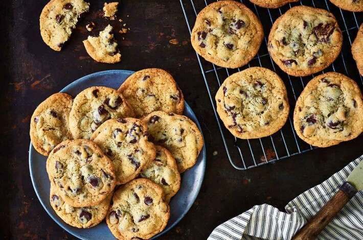

Chocolate Chip Cookies

"Delicious Chocolate Chip Cookies".
Everyone has a favorite chocolate chip cookie recipe;
this is ours. These gold cookies are packed wiht chips
and loaded with buttery flavor. They walk the line
between crunchy and chewy: the edges are crisp, while
the center is "bendy."
Ingredients
- 2/3 cup (142g) light brown sugar, packed
- 2/3 cup (131g) granulated sugar
- 8 tablespoons (113g) unsalted butter
- 1/2 cup (92g) vegetable shortening
- 3/4 teaspoon salt, (use 1/2 teaspoon salt if you use salted butter)
- 2 teaspoons vanilla extract
- 1 teaspoon cider vinegar or white vinegar
- 1 teaspoon baking soda
- 1 large egg
- 2 cups (240g) King Arthur Unbleached All-Purpose Flour
- 2 cups (340g) semisweet chocolate chips
Steps
- Preheat the oven to 375°F. Lightly grease (or line with parchment) two baking sheets.
- In a large bowl, combine the sugars, butter, shortening, salt, vanilla extract, vinegar, and baking soda, beating until smooth and creamy.
- Beat in the egg, again beating until smooth. Scrape the bottom and sides of the bowl with a spatula to make sure everything is thoroughly combined.
- Mix in the flour, then the chips.
- Use a spoon (or a tablespoon cookie scoop) to scoop 1 1/4" balls of dough onto the prepared baking sheets, leaving 2" between them on all sides; they'll spread.
- For enticing salty-sweet flavor, sprinkle a touch of sea salt atop the cookies before putting them in the oven, if desired.
- Bake the cookies for 11 to 12 minutes, until their edges are chestnut brown and their tops are light golden brown, almost blonde.
- Remove the cookies from the oven, and cool on the pan until they've set enough to move without breaking. Repeat with the remaining dough.